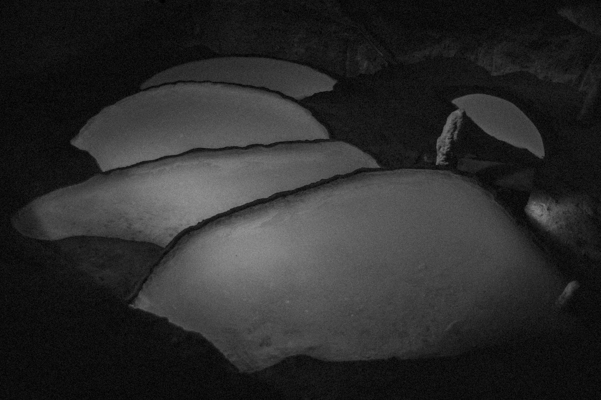

0%

EN
- - DOUBLE CLICK TO OPEN THE IMAGES IN LARGE FORMAT
- - CLICK AND DRAG TO ROTATE THE SPHERE
- - SCROLL TO ZOOM IN OR OUT
- - RESET YOUR IMMERSION BY CLICKING ON "NICOLAS HERMANN"
- - FIND OUT MORE ABOUT HIS WORK BY CLICKING ON "SERIES"
FR
- - DOUBLE CLIQUEZ POUR OUVRIR LES IMAGES EN GRAND FORMAT
- - CLIQUEZ ET DÉPLACEZ POUR TOURNER LA SPHERE
- - SCROLLEZ POUR ZOOMER OU DÉZOOMER
- - RÉINITIALISEZ VOTRE IMMERSION EN CLIQUANT SUR "NICOLAS HERMANN"
- - DÉCOUVREZ SON TRAVAIL PLUS EN PRÉCISION EN CLIQUANT SUR "SÉRIES"